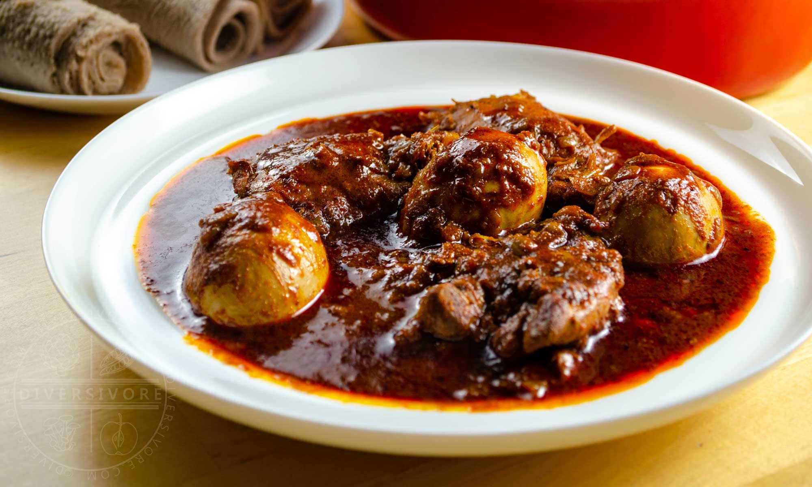

Ethiopian Chicken Stew | Doro wat

Description:
Doro wat is a richly spiced, fragrant, and delicious chicken-and-egg stew
from Ethiopia.The chicken cooks in a flavour-rich base of slow-cooked
onions, berbere, niter kibbeh (spiced clarified butter), ginger, and
garlic.
Hard-boiled eggs go in towards the end for a protein-rich and delightfully
low-cost meal fit to feed a small army.
Ingredients:
- 8-10 bone-in chicken thighs
- 10 cloves garlic minced
- 3 inches ginger minced (~50 g)
- 2 tbsp vegetable oil
-
6 medium red onions minced or finely chopped (about 6 cups, or 900
grams)
- 2 tbsp tomato paste
- 1/2 cup berbere
- 2 cups water (approximate)
- 1/3 cup niter kibbeh
- 1 tsp korarima or green cardamom seeds
- 1/2 tsp black pepper
- 1/2 tsp nutmeg
- 1 tsp salt or to taste
- 6 hard-boiled eggs peeled and
- injera
Steps
- Combine ginger, garlic, and oil to make paste. Set aside.
-
Place a large dutch oven (or similar pot) over low heat on the stove
top. Add the minced onions to the dry pan and cook slowly, stirring
regularly as the liquid releases and allows the onions to simmer and
caramelize. If necessary, you can add a little oil. Cook until the
onions are caramelized and fragrant - generally around 25-30 minutes.
(Note: don't try rush this step, as it's key to the flavour of the
finished dish!)
-
Add the ginger/garlic paste and tomato paste to the pot. Saute for 2-3
minutes, stirring regularly.
-
Add the berbere and stir to combine, then saute for about 1 minute. Add
2 cups of water. Increase the heat to medium and and bring the pot to a
low simmer for about 5 minutes.
-
Add the niter kibbeh and spices and stir to combine. Simmer for 5 more
minutes.
-
Add the chicken. Reduce heat to low, cover, and cook until the chicken
is very tender - around 1 hour. If the sauce starts to thicken and
sputter a bit too much while cooking, you can add a little extra water.
-
Add the hard boiled eggs, and continue to simmer gently for about 10
more minutes.
-
If you want a thinner/soupier sauce, you can add a little bit of water.
Adjust salt to taste if necessary. Serve with injera and plenty of extra
sauce.
Go back to Recipes List